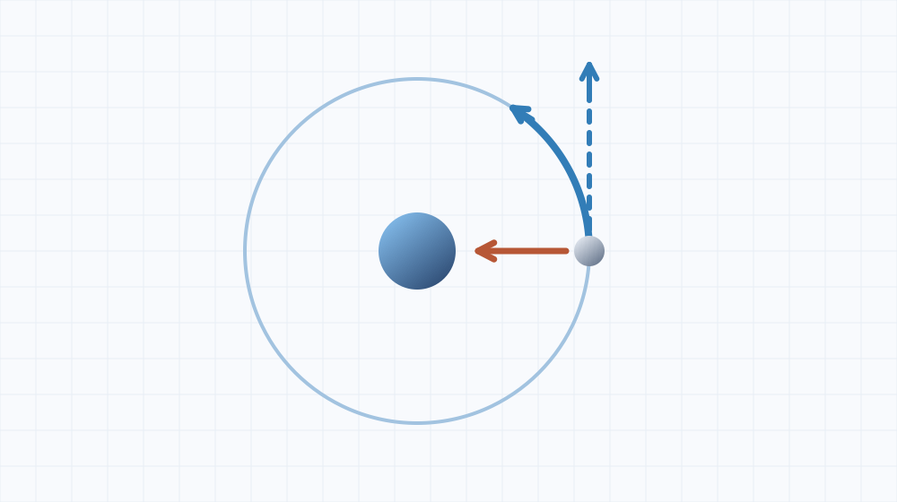
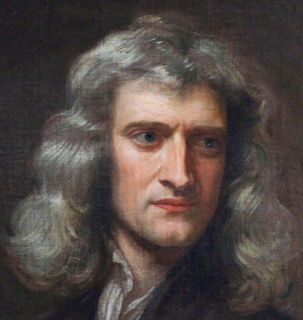
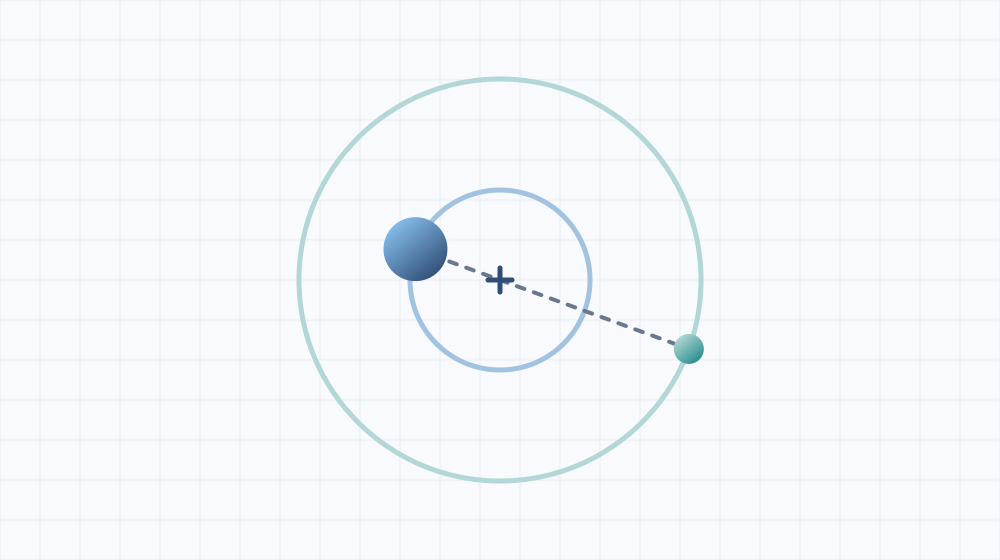

Γιατί η Σελήνη μένει σε τροχιά;
Ανακάλυψε πώς η βαρύτητα και η ταχύτητα κρατούν τη Σελήνη σε τροχιά.
Συνέχισε το διάβασμα για να μάθεις…
- Πώς συνδέθηκε η κίνηση της Σελήνης με την πτώση μιας πέτρας.
- Γύρω από ποιο σημείο κινούνται η Γη και η Σελήνη.
- Πώς αλλάζει το σχήμα της τροχιάς όταν αλλάζουμε την αρχική ταχύτητα.
Πέφτει ποτέ η Σελήνη;
Αν περπατήσεις ένα βράδυ με τη Σελήνη απέναντί σου, μπορεί να σου δώσει την εντύπωση ότι σε ακολουθεί. Προχωράς, το δέντρο που ήταν δίπλα της μένει πίσω, κι εκείνη εμφανίζεται πάλι στο άνοιγμα ανάμεσα στις στέγες. Φταίει βέβαια η τεράστια απόσταση. Από τη μια άκρη του δρόμου στην άλλη η θέση ενός κοντινού δέντρου αλλάζει πολύ περισσότερο στο οπτικό σου πεδίο. Αν όμως σημειώσεις πού βρίσκεται το φεγγάρι σε σχέση με τα ίδια μακρινά άστρα και ξανακοιτάξεις το επόμενο βράδυ, θα το βρεις λίγο ανατολικότερα. Κάτι κινείται εκεί πάνω, κι ας μοιάζει ακίνητο την ώρα που περπατάς.
Κάτω στη Γη τα πράγματα φαίνονται απλούστερα. Άφησε μια πέτρα από το χέρι σου και θα πέσει. Αν την αφήσεις από αρκετό ύψος, σ’ ένα δευτερόλεπτο θα έχει κατέβει σχεδόν πέντε μέτρα (η αντίσταση του αέρα, για μια μικρή συμπαγή πέτρα, ελάχιστα αλλάζει τον λογαριασμό). Κι αν εδώ κάτω τραβιούνται τα πάντα προς τη Γη, μέχρι πού φτάνει άραγε αυτή η έλξη; Ως τα σύννεφα; Ως την κορυφή ενός βουνού; Ως τη Σελήνη;
Ας κάνουμε λοιπόν μια κάπως παράξενη υπόθεση. Η Σελήνη πέφτει προς τη Γη αυτήν ακριβώς τη στιγμή, όπως η πέτρα που μόλις αφήσαμε. Αν είναι έτσι, πόσο χρόνο χρειάζεται για να πέσει πέντε μέτρα και γιατί δεν έχει φτάσει ήδη στο έδαφος; Κράτα την πρώτη απάντηση που σου έρχεται στο μυαλό. Πριν τη δοκιμάσουμε, αξίζει να δούμε πώς βρεθήκαμε να συγκρίνουμε μια πέτρα με ένα ολόκληρο φεγγάρι.
Χρειαζόμαστε άλλους νόμους για τον ουρανό;
Για τον Αριστοτέλη, η διαφορά ανάμεσα στην πέτρα και τη Σελήνη θα ήταν αυτονόητη. Στη φυσική του, τα γήινα σώματα είχαν έναν φυσικό τόπο προς τον οποίο κινούνταν. Έτσι, μια πέτρα πήγαινε προς το κέντρο του κόσμου, που ήταν και το κέντρο της Γης. Ο ουρανός είχε τους δικούς του κανόνες. Τα ουράνια σώματα, φτιαγμένα από διαφορετικό υλικό, είχαν για φυσική τους κίνηση την κυκλική. Είναι εύκολο να δούμε πού στηριζόταν αυτή η ιδέα. Οι πέτρες κοιτούν, κατά κάποιον τρόπο, μόνο προς τα κάτω, ενώ ο ουρανός φαίνεται να επαναλαμβάνει τα ίδια γυρίσματα χρόνο με τον χρόνο.
Όσο όμως ακριβέστερα μετράμε τη θέση ενός πλανήτη, τόσο πιο δύσκολο είναι να του επιβάλουμε το σχήμα που θα θέλαμε να έχει η τροχιά του. Στις αρχές του 17ου αιώνα, ο Johannes Kepler δούλευε με τις παρατηρήσεις του Δανού αστρονόμου Tycho Brahe για τον Άρη. Επί χρόνια δοκίμαζε να χωρέσει τις θέσεις του πλανήτη σε μια κυκλική τροχιά. Μια μικρή απόκλιση στα δεδομένα επέμενε, κι ευτυχώς για εμάς ο Kepler την πήρε στα σοβαρά. Το σχήμα που ταίριαζε στις μετρήσεις ήταν μια έλλειψη, με τον Ήλιο στη μία από τις δύο εστίες της.
Το 1609 δημοσίευσε δύο νόμους που περιέγραφαν το σχήμα της τροχιάς και τον ρυθμό με τον οποίο τη διαγράφει ο πλανήτης. Ο Άρης, όπως και οι άλλοι πλανήτες, κινείται γρηγορότερα όταν περνά κοντά στον Ήλιο και πιο αργά όσο βρίσκεται μακριά του. Μας έλειπε όμως ακόμη μια εξήγηση. Τι αναγκάζει ένα σώμα να στρίβει σε κάθε σημείο της διαδρομής του; Και ποια σχέση θα μπορούσε να έχει αυτό το μόνιμο στρίψιμο με την πτώση που βλέπουμε εδώ κάτω;
Προς τα πού θα πήγαινε αν την αφήναμε ήσυχη;
Σπρώξε ένα βιβλίο πάνω σε ένα τραπέζι και θα σταματήσει σχεδόν αμέσως. Πάνω σε πάγο θα γλιστρούσε αρκετά πιο μακριά. Η καθημερινή μας εμπειρία μάς μαθαίνει να συνδέουμε την κίνηση με ένα διαρκές σπρώξιμο. Στο παράδειγμα του βιβλίου όμως έχουμε κι άλλη δύναμη να υπολογίσουμε, την τριβή. Όσο μικρότερη γίνεται, τόσο περισσότερο διατηρείται η κίνηση που έδωσε το πρώτο σπρώξιμο. Στο ιδανικό όριο όπου οι δυνάμεις αλληλοαναιρούνται ή λείπουν εντελώς, ένα σώμα συνεχίζει με την ίδια ταχύτητα και την ίδια κατεύθυνση. Αυτή είναι η αρχή της αδράνειας.
Ας πάρουμε τώρα ένα χαρτί και ας ζωγραφίσουμε τη Σελήνη στην πιο απλή δυνατή τροχιά, έναν κύκλο γύρω από τη Γη. Βάλε τη Γη στο κέντρο, το φεγγάρι δεξιά, και σχεδίασε ένα βέλος που ξεκινά από το φεγγάρι και δείχνει κατακόρυφα προς τα πάνω στη σελίδα. Εκείνη τη στιγμή αυτή είναι η κατεύθυνση της κίνησής του. Η ευθεία του βέλους ακουμπά τον κύκλο μόνο στο σημείο απ’ όπου ξεκινά. Τη λέμε εφαπτομένη.
Για χάρη του πειράματος, φαντάσου ότι μπορούμε να σβήσουμε τη βαρύτητα για ένα λεπτό. Με μέση ταχύτητα περίπου ένα χιλιόμετρο το δευτερόλεπτο, η Σελήνη θα διένυε γύρω στα 61 χιλιόμετρα κατά μήκος της εφαπτομένης. Βάλε μια τελεία εκεί. Η τροχιά που είχες σχεδιάσει νωρίτερα καμπυλώνει από τη στιγμή που αφήνεις πίσω το αρχικό σημείο. Η απόσταση που ανοίγει ανάμεσα στην ευθεία και την καμπύλη είναι ακριβώς αυτό που θέλουμε να μετρήσουμε.

Πώς γίνεται να πέφτεις και να μη φτάνεις ποτέ;
Ας ανάψουμε πάλι τη βαρύτητα και ας ξαναπαίξουμε το ίδιο λεπτό από την αρχή. Όσο η Σελήνη βρίσκεται στο δεξί άκρο του κύκλου, η Γη την τραβά προς τα αριστερά στη σελίδα. Έπειτα από λίγη ώρα έχει κιόλας προχωρήσει προς τα πάνω, οπότε η έλξη δείχνει αριστερά και λίγο προς τα κάτω. Αν σταματήσεις τη σκηνή οπουδήποτε, θα βρεις την ταχύτητα να δείχνει κατά μήκος της εφαπτομένης και τη δύναμη προς το κέντρο. Χάρη σε αυτή τη συνεχή έλξη, αλλάζει κάθε στιγμή η κατεύθυνση της κίνησης. Στον τέλειο κύκλο το μέτρο της ταχύτητας μένει σταθερό.
Ίσως βοηθήσει να φανταστούμε μια μικρή μπάλα που φεύγει οριζόντια από την άκρη ενός τραπεζιού. Η μπάλα κουβαλά ήδη μια πλάγια ταχύτητα, ενώ η Γη προσθέτει ταχύτητα προς τα κάτω. Γι’ αυτό πατάει στο πάτωμα λίγο παραπέρα. Αν φύγει με μεγαλύτερη ταχύτητα, η πτώση από το ίδιο ύψος της δίνει περίπου τον ίδιο χρόνο, αλλά στο μεταξύ η μπάλα έχει ταξιδέψει πιο μακριά. Το πάτωμα στο δωμάτιο φαίνεται επίπεδο. Αν μπορούσαμε να συνεχίσουμε το πείραμα σε κλίμακα ολόκληρου πλανήτη, θα έπρεπε να συμπεριλάβουμε και κάτι που αμελήσαμε στο δωμάτιο. Η επιφάνεια της Γης καμπυλώνει.
Στο ιδανικό πείραμα, χωρίς αέρα και βουνά στη μέση, υπάρχει μια αρχική οριζόντια ταχύτητα για την οποία το έδαφος καμπυλώνει μακριά από την μπάλα ακριβώς όσο καμπυλώνει η τροχιά της προς το έδαφος. Η μπάλα γυρίζει τελικά γύρω από τη Γη. Με τη Σελήνη συμβαίνει το ίδιο πράγμα σε μεγαλύτερη κλίμακα. Τα πέντε μέτρα που ψάχνουμε στην κυκλική μας ζωγραφιά είναι η μετατόπισή της προς τα μέσα, με αφετηρία την τελεία όπου θα είχε καταλήξει χωρίς βαρύτητα. Η ακτίνα του κύκλου, στο μεταξύ, παραμένει ίδια.
Πέντε μέτρα εδώ, πέντε μέτρα εκεί πάνω
Ο Isaac Newton σύγκρινε στην πράξη την πτώση στην επιφάνεια της Γης με την πτώση της Σελήνης. Στα Principia του (1687) ξεκίνησε από όσα ήταν γνωστά για την απόσταση και την περίοδο της Σελήνης. Υπολόγισε πόσο καμπυλώνει η τροχιά της μέσα σε ένα λεπτό και πήρε μια τιμή μερικών μέτρων. Έπειτα συνέκρινε την έλξη που θα χρειαζόταν για να συμβεί αυτό με τη βαρύτητα που μετράμε στην επιφάνεια. Εμείς μπορούμε να κάνουμε τον λογαριασμό και προς την αντίθετη κατεύθυνση, αρχίζοντας από την πέτρα.

Στον νόμο της παγκόσμιας έλξης, ο Newton πρότεινε ότι όσο απομακρυνόμαστε από το κέντρο της Γης, η βαρυτική επιτάχυνση μειώνεται με το τετράγωνο της απόστασης. Δυο φορές πιο μακριά σημαίνει το ένα τέταρτο της επιτάχυνσης. Τρεις φορές πιο μακριά σημαίνει το ένα ένατο. Η απόσταση της Σελήνης είναι περίπου 60 γήινες ακτίνες, όταν τη μετράμε από το κέντρο της Γης. Εκεί λοιπόν η επιτάχυνση που προκαλεί η Γη είναι περίπου 60 × 60, δηλαδή 3.600 φορές μικρότερη από ό,τι στην επιφάνειά της.
Πώς μεταφράζεται η επιτάχυνση σε μέτρα πτώσης; Σε ένα σύντομο διάστημα, κατά το οποίο η έλξη προλαβαίνει να αλλάξει ελάχιστα σε μέτρο και κατεύθυνση, η απόκλιση από την ευθεία είναι περίπου η μισή επιτάχυνση επί το τετράγωνο του χρόνου.
Ας δούμε γιατί εμφανίζεται το τετράγωνο. Με διπλάσιο χρόνο, η έλξη προσθέτει διπλάσια τελική ταχύτητα προς το κέντρο. Και η μέση ταχύτητα που αποκτήθηκε προς αυτή την κατεύθυνση δρα για διπλάσιο χρόνο, οπότε η απόκλιση γίνεται τετραπλάσια. Στη Σελήνη δίνουμε 60 φορές περισσότερο χρόνο απ’ ό,τι στην πέτρα. Από τον χρόνο παίρνουμε έναν παράγοντα 60² και από την εξασθένηση της βαρύτητας διαιρούμε με 60². Οι δύο παράγοντες απλοποιούνται. Περίπου 4,9 μέτρα σε ένα δευτερόλεπτο στην επιφάνεια, περίπου τόσα σε ένα λεπτό στην απόσταση της Σελήνης.
Αξίζει να κοντοσταθούμε στο τι συγκρίναμε. Στη μια πλευρά έχουμε μια απόσταση που μπορείς να μετρήσεις κάπου κοντά στο σπίτι σου. Στην άλλη έχουμε την κίνηση ενός σώματος εκατοντάδες χιλιάδες χιλιόμετρα μακριά. Το ότι οι δυο μετρήσεις συνδέονται με έναν τόσο απλό κανόνα ήταν σοβαρός λόγος να πιστέψουμε ότι πρόκειται για την ίδια φυσική. Και μάλιστα ο ίδιος κανόνας είχε μια συνέπεια που μέχρι τώρα βόλευε να αγνοήσουμε.
Ωραία, και ποιος τραβάει τη Γη;
Στο χαρτί μας η Γη έμεινε καρφωμένη στο κέντρο του κύκλου. Η Σελήνη όμως την τραβά με δύναμη ίσου μέτρου και αντίθετης κατεύθυνσης. Αυτό είναι ένα παράδειγμα του τρίτου νόμου του Newton. Κάθε σώμα ασκεί δύναμη στο άλλο. Για να βρούμε πόσο αλλάζει η κίνηση του καθενός, χρειαζόμαστε και τη μάζα του. Φαντάσου δύο καρότσια που τραβάς με την ίδια δύναμη, το ένα άδειο και το άλλο γεμάτο βιβλία. Το γεμάτο αποκτά πιο αργά ταχύτητα. Η Γη έχει περίπου 81 φορές τη μάζα της Σελήνης και γι’ αυτό η δική της επιτάχυνση, από την έλξη του άλλου σώματος, είναι περίπου 81 φορές μικρότερη.
Ας βάλουμε τώρα τα δύο σώματα στα άκρα μιας αβαρούς σανίδας και ας ψάξουμε το σημείο όπου θα μπορούσαμε να την ισορροπήσουμε σε ένα δάχτυλο. Με ίσες μάζες θα έβαζες το δάχτυλο στη μέση. Όσο αυξάνεις τη μία μάζα, φέρνεις το στήριγμα κοντύτερά της. Το σημείο που ψάχνουμε λέγεται βαρύκεντρο και είναι το κοινό κέντρο μάζας των δύο σωμάτων. Για την ισορροπία, πολλαπλασίασε κάθε μάζα με την απόστασή της από το στήριγμα. Τα γινόμενα πρέπει να είναι ίσα.
Οι δείκτες 1 και 2 αντιστοιχούν στη Γη και στη Σελήνη, αντίστοιχα.
Χώρισε λοιπόν τη μέση απόσταση των 384.400 χιλιομέτρων ανάμεσα στα κέντρα σε 82 ίσα κομμάτια. Στη Γη αντιστοιχεί ένα κομμάτι, στη Σελήνη τα υπόλοιπα 81. Το σημείο βγαίνει περίπου 4.700 χιλιόμετρα μακριά από το κέντρο της Γης. Η ακτίνα της είναι περίπου 6.400 χιλιόμετρα. Με άλλα λόγια, το δάχτυλό μας θα έπρεπε να μπει μέσα στον πλανήτη! Εκεί κοντά βρίσκεται το σημείο γύρω από το οποίο διαγράφει τη μικρή της τροχιά η Γη, ενώ η τροχιά της Σελήνης απλώνεται πολύ πιο έξω.

Αν μελετάμε μόνο αυτά τα δύο σώματα, οι δυνάμεις που ασκούν το ένα στο άλλο είναι εσωτερικές στο ζευγάρι. Αλλάζουν τις κινήσεις των μελών του, ενώ το βαρύκεντρο συνεχίζει ευθεία με την ταχύτητα που είχε, ή μένει ακίνητο αν ξεκίνησε έτσι. Είναι βολικό να παρακολουθούμε την κίνηση από εκεί. Σαν να μετακομίζουμε από το κέντρο της Γης στο κέντρο ενός ζευγαριού που στριφογυρίζει, ώστε να βλέπουμε επιτέλους και τους δύο.
Κι αν η Σελήνη πήγαινε λίγο πιο αργά;
Στην κυκλική ζωγραφιά μας υπήρχε μια λεπτομέρεια που περάσαμε κάπως βιαστικά. Για δεδομένη απόσταση και δεδομένες μάζες, χρειάζεται συγκεκριμένο μέτρο ταχύτητας για να προκύψει κύκλος. Φαντάσου ότι βρίσκεσαι πάλι στο δεξί άκρο της τροχιάς και ότι μειώνεις λίγο την ταχύτητα της Σελήνης προς τα πάνω. Η Γη την τραβά ακόμη με την ίδια δύναμη στην πρώτη στιγμή, διότι η απόσταση ανάμεσά τους είναι ακόμη η ίδια. Σε ίσο χρόνο όμως η Σελήνη φτάνει λιγότερο μακριά προς τα πάνω. Η απόστασή της από τη Γη αρχίζει να μικραίνει.
Αν η αρχική ταχύτητα παραμένει αρκετή ώστε η Σελήνη να περάσει δίπλα από τη Γη, τότε στο απλό μοντέλο μας προκύπτει μια έλλειψη. Μπορείς να τη ζωγραφίσεις με δύο καρφίτσες, μια κλειστή θηλιά από σπάγκο και ένα μολύβι. Βάζεις τη θηλιά γύρω από τις καρφίτσες, κρατάς τον σπάγκο τεντωμένο με το μολύβι και γυρίζεις γύρω τους. Οι καρφίτσες δείχνουν τις δύο εστίες. Εκείνο που μένει σταθερό σε όλη τη διαδρομή του μολυβιού είναι το άθροισμα των αποστάσεών του από τις δύο καρφίτσες. Αν βάλεις τις καρφίτσες στο ίδιο σημείο, ξαναβρίσκεις τον κύκλο.
Φαντάσου τώρα ότι δίνουμε στη Σελήνη λίγο μεγαλύτερη εφαπτομενική ταχύτητα από αυτή που χρειάζεται ο κύκλος. Στην αρχή θα απομακρυνθεί. Αν η αύξηση είναι μικρή, έχουμε πάλι έλλειψη, μόνο που τώρα ξεκινάμε από το κοντινότερο σημείο της. Με αρκετά μεγαλύτερη ταχύτητα, η Σελήνη θα μπορούσε να φύγει σε ανοιχτή διαδρομή. Στο άλλο άκρο, αν της κόβαμε εντελώς την πλάγια ταχύτητα, τα δυο σώματα θα έπεφταν κατευθείαν το ένα προς το άλλο. Με τις ίδιες μάζες και την ίδια αρχική απόσταση έχουμε, λοιπόν, πολύ διαφορετικά αποτελέσματα. Αρκεί μια αλλαγή στην αρχική ταχύτητα.
Διαδραστικό Εργαστήριο
Στο εργαστήριο που ακολουθεί ξεκινάμε με δύο ίσα σώματα. Το καθένα έχει μάζα 0,40 φορές τη μάζα της Γης, και τα δύο έχουν τις κατάλληλες αντίθετες ταχύτητες για να διαγράφουν κύκλους γύρω από το μέσο τους. Μπορείς να τα βλέπεις να ανταλλάσσουν θέσεις ύστερα από κάθε μισή περιφορά. Το μικρό βέλος δίπλα στη μάζα που έχεις επιλέξει δείχνει την κατεύθυνση της ταχύτητάς της. Αν πατήσεις παύση, είναι πιο εύκολο να το φανταστείς ως το βέλος που είχαμε σχεδιάσει στο χαρτί.
Στην ενότητα Προσομοίωση μπορείς να χαμηλώσεις την Ταχύτητα κίνησης, για να περνά πιο αργά ο χρόνος στο εργαστήριο και να προλάβεις να παρατηρήσεις μια λεπτομέρεια. Για να αλλάξεις την ίδια την τροχιά, επίλεξε ένα σώμα και πήγαινε στην Ταχύτητα. Εκεί οι αριθμοί X και Y, σε χιλιόμετρα ανά δευτερόλεπτο, δείχνουν πόση ταχύτητα έχει οριζόντια και κατακόρυφα αντίστοιχα. Οι αποστάσεις στο εργαστήριο μετριούνται σε αστρονομικές μονάδες (AU), καθεμιά περίπου όσο η μέση απόσταση της Γης από τον Ήλιο.
Τι να παρατηρήσεις…
- Μια μικρή αλλαγή στην ταχύτητα. Στα Παραδείγματα φόρτωσε το Ζεύγος και πάτησε το εικονίδιο επαναφοράς για να παγώσει στην αρχική θέση. Επίλεξε διαδοχικά κάθε σώμα και πολλαπλασίασε τις τιμές X και Y της ταχύτητάς του επί 0,8, κρατώντας τα πρόσημά τους. Πόσο περιμένεις να πλησιάσουν μεταξύ τους; Πάτησε Έναρξη και κοίτα τα ίχνη τους.
- Ψάξε τη γρηγορότερη στιγμή. Στο ίδιο πείραμα, σημείωσε την τιμή Y της ταχύτητας ενός σώματος στην αρχική θέση. Πάτησε Παύση όταν τα σώματα βρεθούν κοντά και πάλι στο ίδιο ύψος πάνω στο πλέγμα. Τώρα η ταχύτητα δείχνει σχεδόν κατακόρυφα, όπως στην αρχική θέση. Σύγκρινε τις δύο τιμές Y, χωρίς τα πρόσημά τους. Ποια είναι μεγαλύτερη;
- Πού θα έβαζες τώρα το δάχτυλο; Φόρτωσε πάλι το Ζεύγος, πάτησε επαναφορά και αύξησε τη μία μάζα από 0,40 σε 0,80 γήινες μάζες. Υπολόγισε πού πέφτει τώρα το βαρύκεντρο, πριν ξεκινήσεις την κίνηση. Με τις παλιές αντίθετες ταχύτητες και τις νέες μάζες, οι ορμές των δύο σωμάτων έχουν πλέον διαφορετικό μέτρο. Κράτα με το μάτι τη θέση του κοινού τους κέντρου. Μένει στην ίδια θέση πάνω στο πλέγμα;
Γιατί βιάζονται όταν πλησιάζουν;
Στο πρώτο πείραμα τα σώματα ξεκινούν από τη μεγαλύτερη απόστασή τους. Καθώς πλησιάζουν, κινούνται και λίγο προς τη μεριά που τα τραβά η βαρύτητα. Ένα μέρος της έλξης, δηλαδή, έχει την ίδια φορά με την κίνησή τους και τους προσθέτει ταχύτητα. Στο κοντινότερο σημείο κινούνται στιγμιαία κάθετα προς την έλξη και έχουν τη μεγαλύτερη ταχύτητά τους. Καθώς ξαναφεύγουν, η έλξη έχει πια μια συνιστώσα αντίθετη στην κίνηση, οπότε χάνουν ταχύτητα. Είναι ο ίδιος ρυθμός που είχε αναγνωρίσει ο Kepler στις παρατηρήσεις του Άρη.
Αν έμενες στο βαρύκεντρο του πειράματος με τις ίσες μάζες, θα έβλεπες κάθε σώμα να διαγράφει τη δική του έλλειψη με το βαρύκεντρο στη μία εστία. Θα έβλεπες επίσης τα σώματα συνεχώς το ένα απέναντι από το άλλο. Στο πείραμα όπου η μία μάζα είναι διπλάσια, το κοινό κέντρο βρίσκεται στο ένα τρίτο της απόστασης από το βαρύτερο σώμα και ταξιδεύει και το ίδιο πάνω στο πλέγμα. Αν μπορούσες να ταξιδεύεις μαζί του, θα έβλεπες τη βαρύτερη μάζα να κάνει τη μικρότερη διαδρομή.
Υπάρχει κι ένας άλλος τρόπος να κρατήσεις το χαρτί. Στερέωσε το κέντρο του πάνω στο κέντρο της Γης και φρόντισε να είναι πάντα στραμμένο προς τα ίδια μακρινά άστρα. Αν είχαμε μόνο τη Γη και τη Σελήνη, θα έβλεπες και πάλι έλλειψη, με το κέντρο της Γης στη μία εστία. Τόσο η έλλειψη του παρατηρητή στη Γη όσο και οι δύο μικρότερες ελλείψεις του παρατηρητή στο βαρύκεντρο περιγράφουν τις ίδιες κινήσεις από διαφορετικό σημείο.
Και πόσο καλή είναι αυτή η ζωγραφιά;
Στην πραγματικότητα η απόσταση της Σελήνης αλλάζει κάθε μήνα. Λέμε περίγειο το σημείο όπου βρίσκεται πιο κοντά στη Γη και απόγειο εκείνο όπου βρίσκεται πιο μακριά. Η έλλειψη είναι αρκετά κοντά στον κύκλο ώστε, αν ζωγραφίσεις την τροχιά με τις σωστές αναλογίες, να χρειαστεί να ψάξεις λίγο για να δεις τη διαφορά στο σχήμα. Με μετρήσεις απόστασης όμως, η διαφορά φαίνεται καθαρά. Στο περίγειο και στο απόγειο οι μέσες αποστάσεις είναι περίπου 363.000 και 406.000 χιλιόμετρα αντίστοιχα.
Και φυσικά υπάρχει κι ο Ήλιος. Τραβάει μαζί τη Γη και τη Σελήνη καθώς γυρίζουν γύρω του. Επειδή όμως το φεγγάρι βρίσκεται σε διαφορετική θέση από τη Γη, η ηλιακή έλξη έχει λίγο διαφορετικό μέτρο και κατεύθυνση στο καθένα. Αυτή η μικρή διαφορά αρκεί για να μεταβάλει την τροχιά της Σελήνης. Αν σημείωνες για πολλούς μήνες το κοντινότερο σημείο πάνω στο χαρτί σου, θα διαπίστωνες ότι μετακινείται. Η απλή έλλειψη, όσο χρήσιμη κι αν είναι για μια πρώτη πρόβλεψη, δεν μπορεί μόνη της να σου πει πού θα βρίσκεται ακριβώς το φεγγάρι ύστερα από χρόνια.
Πώς ξέρουμε πάλι αυτές τις αποστάσεις με τόση σιγουριά; Οι αστροναύτες των αποστολών Apollo άφησαν στη Σελήνη ανακλαστήρες που επιστρέφουν φως προς το σημείο απ’ όπου ήρθε. Από ένα αστεροσκοπείο στη Γη στέλνουμε έναν σύντομο παλμό λέιζερ προς έναν από αυτούς. Μετράμε περίπου δυόμισι δευτερόλεπτα ώσπου να επιστρέψει το φως. Αν πολλαπλασιάσουμε αυτόν τον χρόνο με την ταχύτητα του φωτός, παίρνουμε την απόσταση για το πήγαινε και το έλα μαζί. Η μισή αντιστοιχεί στην απόσταση που θέλαμε να βρούμε. Επαναλαμβάνοντας τέτοιες μετρήσεις, μπορούμε να συγκρίνουμε την πρόβλεψη του μοντέλου μας με την τροχιά που ακολουθεί πραγματικά η Σελήνη.
Όταν ξαναδείς τη Σελήνη ανάμεσα στις στέγες, διάλεξε νοερά ένα σημείο της τροχιάς της και βρες προς τα πού θα έδειχνε εκεί το βέλος της ταχύτητας. Ύστερα τράβηξε ένα δεύτερο βέλος προς τη Γη. Το πρώτο δείχνει πού θα πήγαινε το φεγγάρι μέσα στο επόμενο λεπτό αν το αφήναμε ήσυχο. Το δεύτερο δείχνει πού θα αναζητούσες εκείνα τα πέντε μέτρα. Με το μάτι είναι αδύνατον να τα ξεχωρίσεις. Με μια πέτρα, ένα ρολόι και την ιδέα ότι η ίδια βαρύτητα φτάνει μέχρι εκεί πάνω, μόλις τα υπολόγισες.